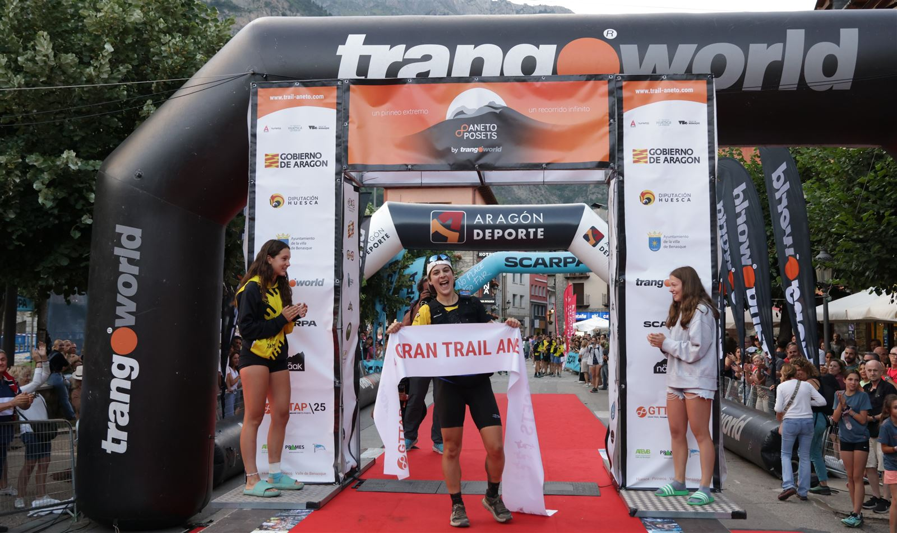
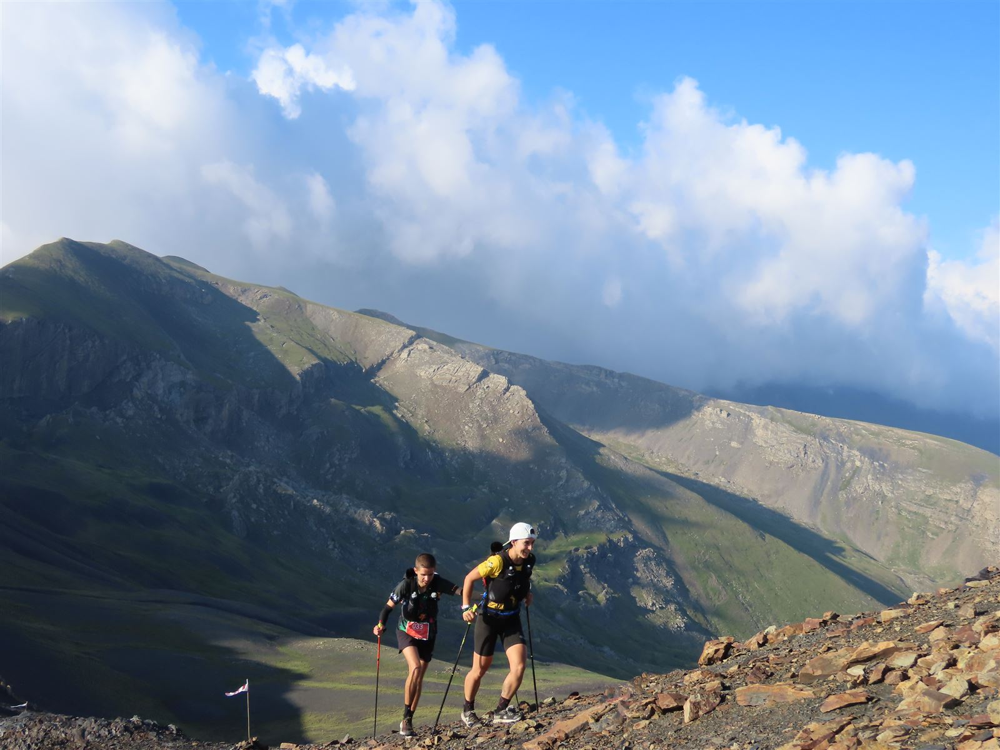
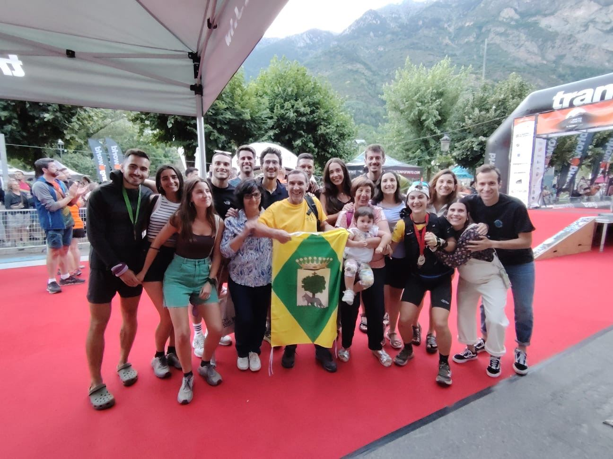
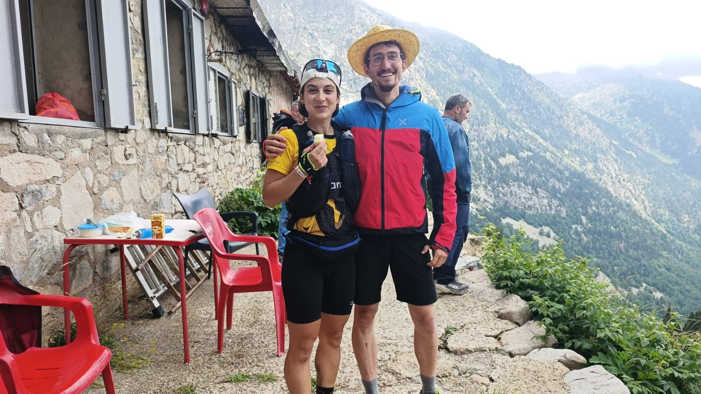
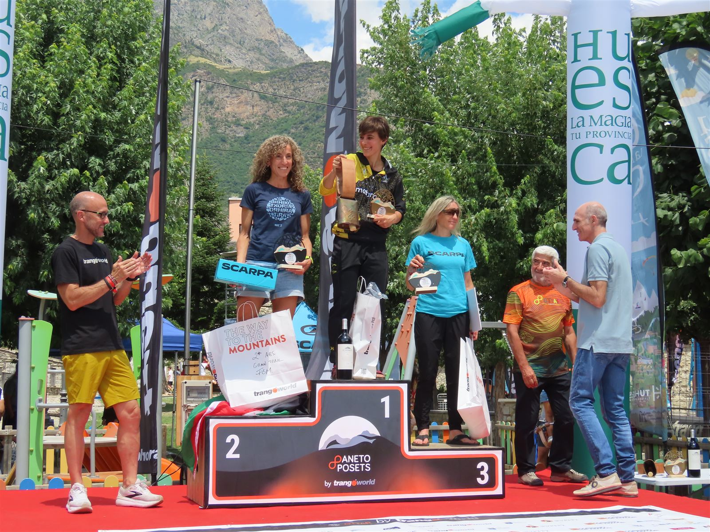

Cuando lo más importante no es ganar
Crónica de mi carrera en la Ultra Aneto-Posets. Por Sandra Cuello.

Llevaba más de la mitad de la carrera y todo iba bien… hasta que de repente me vino un gran bajón. Todavía faltaban 50 kilómetros y unas 10 horas para llegar a meta, y sentía que ya no tenía energía ni fuerza suficiente en las piernas. Durante unos minutos me invadió la impotencia; las ganas de llorar fueron tremendas, y pensé: “¿Ya está? ¿Se acabó?”
No. No me iba a rendir tan fácilmente. Les pedí a todos que me dejaran sola. Tenía que darle la vuelta a la situación como fuera. Era la hora de la verdad.
La espinita del año pasado
La Gran Trail Aneto-Posets es una de las carreras por montaña más espectaculares, duras y mediáticas del Pirineo aragonés. Se celebra en Benasque a mediados de julio y tiene muchas distancias que se corren a lo largo de cuatro días: kilómetro vertical, 14, 21, 42, 56 y 110 km.
Tras varios años haciendo la de 56 km, el año pasado intenté la de 110, pero en el kilómetro 70 tuve que retirarme por una mala gestión del ritmo y de la nutrición. Me prometí que este año volvería más preparada, más fuerte, y que me quitaría la espinita.
Esta temporada estaba siendo bastante buena: 1ª en el Trail Zoquetes (Alcorisa) y en la Ultra Trail Torla-Ordesa, y debutando con la Selección Aragonesa de Montaña en el Campeonato de España de ultras (11ª en Cazorla). Unas semanas antes me instalé con mi furgo en un camping de Benasque para entrenar en altura y reconocer el terreno.
Lo había preparado todo al detalle: ritmos, tiempos de paso por cada avituallamiento, material, estrategia nutricional, imprevistos… Quería hacer mi carrera, con mis ritmos, sin compararme con nadie. El objetivo era bajar de 22 horas, nada más.
Tormenta en Salenques
A las 12 en punto de la noche se dio la salida. Los primeros kilómetros los hice con el pulso disparado de la emoción. “Frena, Sandrita, que son muchas horas…” me repetía. Me encanta correr de noche: la temperatura, el silencio, el cielo estrellado, correr con el frontal…
En la Renclusa me dijeron que iba la primera chica. Intenté que entrara en mi cabeza como un dato neutro. Pasado Salenques, la parte más técnica con un millón de piedras, empezó una tormenta eléctrica: rayos por todas partes, todo oscuro, solos con nuestros frontales, en manga corta… Menos mal que iba con un grupo de cuatro o cinco chicos. Empezó a pedregar y fuimos avanzando juntos, protegiéndonos como podíamos.

Al salir del refugio de Llauset empezó a amanecer. Normalmente me da pena que se acabe la noche, pero esta vez necesitaba secarme. En Coronas me encontré con mi amigo Jorge, que conocí el año anterior en la misma carrera. Subimos juntos al pico de Estibafreda y bajamos con calma: el año pasado eché a perder mi carrera justo allí, y no quería que se repitiera.
Mitad de carrera en Benasque
La llegada a Benasque fue increíble: niños haciendo pasillo, el speaker gritando mi nombre como un loco, todos grabando y animando… En el pabellón tenía a unas 15 personas esperándome, todas con tareas claras: Adela rellenando el agua, David colocando los geles, mi primo Raúl cronometrando los 10 minutos de parada, mi prima Ainhoa vigilando que comiera arroz y bebiera caldo. Mi madre, emocionada, me dio un abrazo exprés.


La hora de la verdad
Justo antes de llegar a Eriste sentí que algo no iba bien. Me costaba correr y no tenía fuerzas para lo que quedaba: 50 km y casi 10 horas. Pedí que me dejaran sola. Esta vez no iba a tirar la toalla. Y le di la vuelta (¡todavía no sé cómo!). Llegué al refugio de Ángel Orús más contenta que unas castañuelas.
La subida al collado de Estós se me hizo eterna. Agachar la cabeza y seguir, pura supervivencia, con mini retos como “llegar hasta aquella cabaña”. En el refugio de Estós, mi primo Raúl me dijo que la segunda, María, estaba a 7 minutos. Quedaban 13 km y no me quedaba mucha gasolina, pero iba a darlo todo en la bajada.
“Cabeza fría, Sandrita. Deja de pensar en cualquier otra cosa que no sea correr al máximo de tus posibilidades.”
Sigo, sigo, sigo… hasta la entrada de Benasque. Mis compañeros del equipo del Matarraña me acompañan los últimos metros, mi familia y amigos llorando de emoción. Cojo la bandera de Robres que me da mi padre y la cinta de ganadora. Estoy en shock. “¿Pero qué ha pasado? Si yo solamente venía a bajar de 22 horas…”
Lo que de verdad cuenta
Después fue una locura: entrevistas, televisión, radio, periódicos, el WhatsApp y el Instagram echando humo… y en Robres, homenaje en las fiestas de agosto. Meses después, todavía veo los vídeos y me sigo emocionando.
La mitad de todo esto se lo debo a mi gente, que está SIEMPRE, llegue la última o la primera. Poder disfrutar de una experiencia así a vuestro lado es mejor que ganar, y si es 2 en 1… Gracias inmensas.
Aunque en mi caso, ganar no es lo más importante. Lo que de verdad cuenta es el viaje y todo el proceso para convertirnos en la persona capaz de conseguirlo. Lo que me motiva es seguir aprendiendo sobre mi cuerpo y mi mente, explorar mis límites y, sobre todo, compartirlo con los demás.

Quien la sigue, la consigue. ¡Seguimosss!